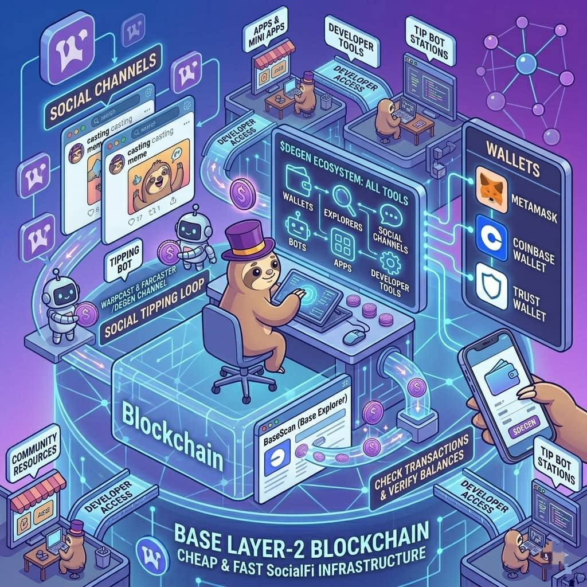

Ecosystem Tools & Products
Wallets, explorers, channels, bots, apps, and other helpers you'll use.
The Degen (DEGEN) ecosystem is more than just a token.
It includes many tools and products that help users store tokens, interact with the community, explore transactions, and build new applications.
These tools make it easier for people to participate, trade, reward creators, and build new ideas around $DEGEN.
A crypto wallet is a tool that allows users to store and manage their $DEGEN tokens.
Instead of keeping money in a bank, crypto users keep their tokens in wallets that they control.
Popular wallets that support the Base network include:
- MetaMask
- Coinbase Wallet
- Trust Wallet
With these wallets, users can:
- hold $DEGEN tokens
- send tokens to other users
- receive tokens
- connect to decentralized apps
Wallets also give users full control of their funds, since they manage their own private keys.
A blockchain explorer is a website that allows anyone to see transactions happening on the blockchain.
For the Base network, the most commonly used explorer is:
BaseScan
Using BaseScan, users can:
- check $DEGEN transactions
- verify wallet balances
- track token transfers
- see smart contract activity
This transparency helps users confirm that transactions are real and recorded on the blockchain.
A big part of the Degen ecosystem is its community interaction.
Users connect with each other through social platforms such as:
Farcaster
Warpcast
Inside these platforms, there are channels, such as the well known /degen channel, where people:
- share ideas
- post memes
- discuss crypto
- reward creators with tips
These channels help the community stay active and connected.
Bots are automated programs that help users interact with the ecosystem more easily.
In the Degen ecosystem, bots can help with things like:
- sending tips automatically
- tracking token rewards
- showing leaderboard rankings
- sharing useful data about the token
For example, tipping bots can allow users to send $DEGEN rewards directly within social posts.
This makes the process fast and easy for community members.
Developers in the ecosystem build applications that connect to the token.
These apps allow users to interact with $DEGEN in different ways.
Examples of apps include:
- social tipping apps
- trading tools
- analytics dashboards
- community reward systems
Many of these apps are built directly on Base, making them fast and inexpensive to use.
Because the ecosystem is open, developers can create new apps that expand what people can do with the token.
The ecosystem also includes tools that help developers build new products.
Developers can access:
- APIs
- smart contract tools
- blockchain data
- open source libraries
These tools allow builders to create:
- new social apps
- NFT projects
- games
- financial tools
This developer activity helps the ecosystem continue growing.
There are also many resources that help users learn about the ecosystem.
These include:
- documentation and guides
- analytics dashboards
- community forums
- educational threads
These resources help both new users and experienced builders understand how the ecosystem works.
